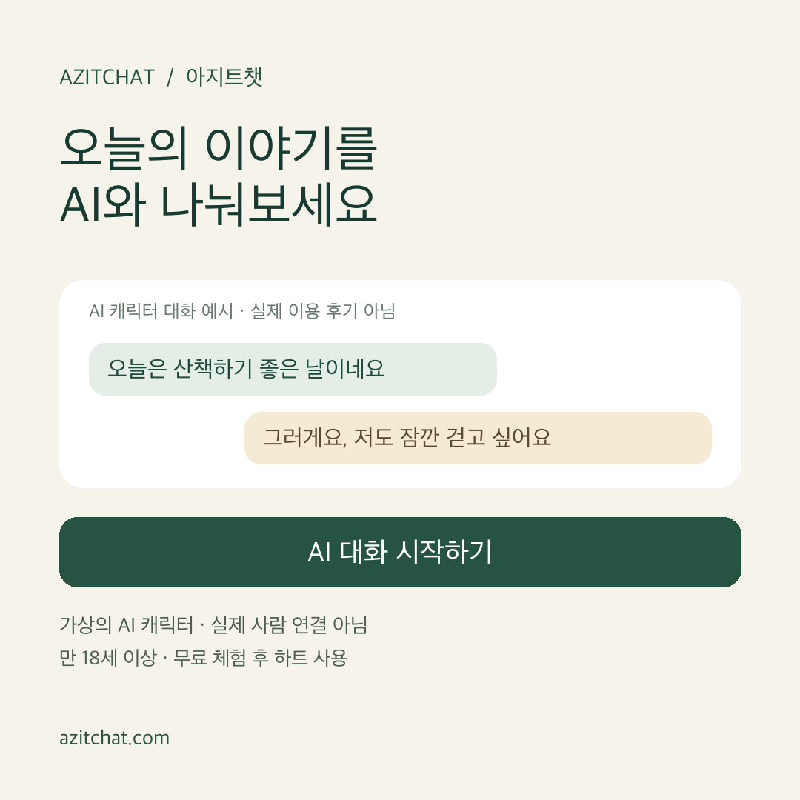
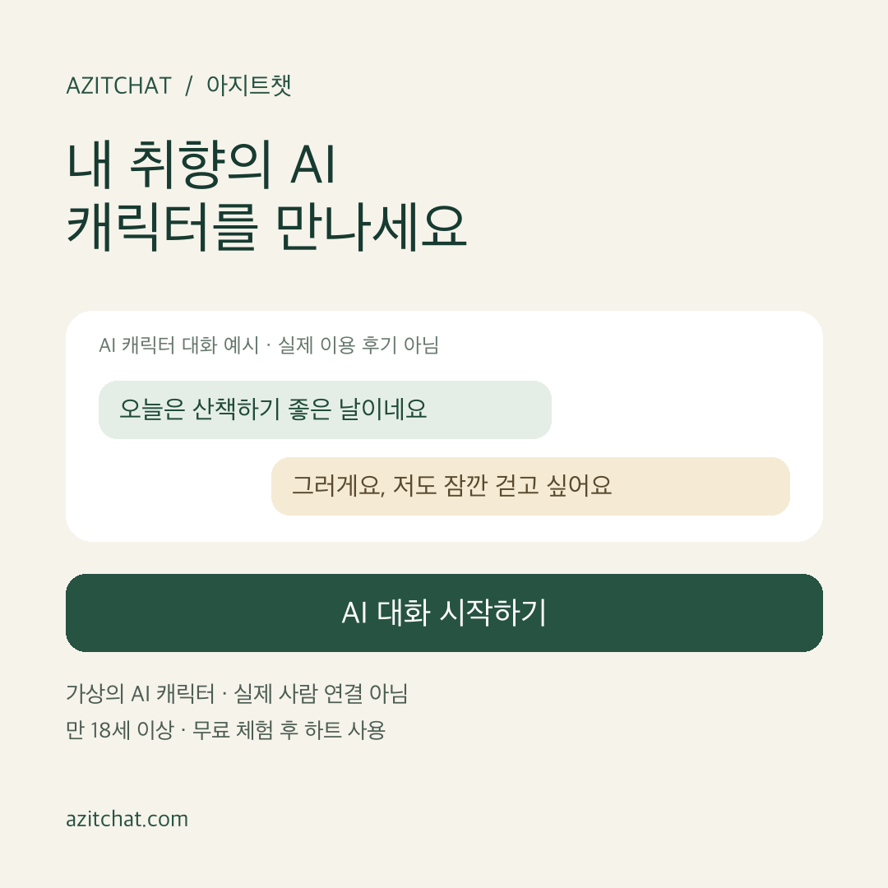
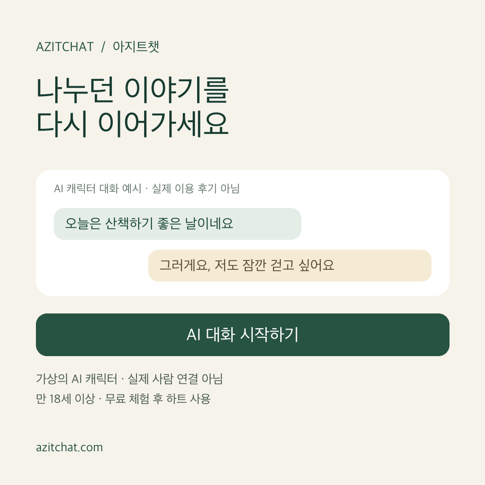

로컬 초안 · 미게시 · 지출 0원
아지트챗 광고 집행 준비
구매 전환 · 한국 남성 40~70세 · 각 플랫폼 최소 일예산
갱신일: 2026년 10월 20일(KST), 준비 시작 10월 19일. 광고 계정에는 아직 캠페인을 저장하거나 게시하지 않았습니다. 아래 파일은 검토·입력용 초안입니다.
현재 집행을 막는 항목
- 운영 결제 비활성: 공개 API /api/payment/config에서 enabled=false, mode=test, methods=[]를 확인했습니다. 구매 최적화 캠페인은 결제 개통 전 집행하지 않습니다.
- 구매 전환 미연결: GA4는 존재하지만 purchase 이벤트, Google Ads 구매 전환 액션, Meta Pixel/CAPI 연결은 확인되지 않았습니다. 가입·충전 화면 클릭을 구매로 대체하지 않습니다.
- 새 광고 계정 생성 확인: Google 아지트챗 486-641-2529의 가입 제출이 완료됐습니다. 한국·KRW·한국 시간대이며 기존 8691 카드가 연결되었습니다. 이전 거부 문구는 새로고침 후 사라졌습니다. 광고 태그 AW-18522897509는 발급됐지만 사이트에 설치하지 않았습니다. Meta는 Maybeworks의 아지트챗 | AzitChat 1605877847474052 생성이 확인됐고 결제 수단은 아직 연결되지 않았습니다. 최신 계정 상태. 어느 플랫폼에도 캠페인을 게시하지 않았으며, 신규 광고주 프로모션 재수령을 전제로 예산을 잡지 않습니다.
- 연령 범위: Google의 35–44 / 45–54 / 55–64 / 65+ 구간으로는 40~70세를 정확히 지정할 수 없습니다. 45–64세로 좁힐지, 35–44·65+까지 포함할지 결정이 필요합니다. Meta도 최대 연령 UI가 65+라면 70세 상한을 보장할 수 없습니다. 요청 범위를 임의 확대하지 않습니다.
- 서비스 심사: 가상 연애·성인 대화 설정이 실제 소스에 있습니다. 일반 대화 광고만으로 전체 서비스를 일반 카테고리로 확정하지 않습니다. Google 동반자/데이트 분류와 인증 필요 여부, Meta 분류·허용 여부를 계정에서 확인해야 합니다. 광고·서비스 내부 모두 AI 고지가 필요합니다.
최소 비용 운영안
Meta 판매 캠페인 1개·광고 세트 1개·소재 3종, Google 검색 캠페인 1개·광고 그룹 2개로 구성했습니다. 키워드는 일치검색부터 사용하고 검색 파트너·디스플레이 확장은 제외합니다. 구매 목표를 유지하며 리타기팅·고객 목록 업로드는 초기안에 포함하지 않습니다.
최저 일예산은 선택한 계정의 통화·최적화·입찰·캠페인 설정에 따라 UI에서 검증해야 합니다. 임의의 금액을 플랫폼 최저라고 표기하지 않았습니다. 금액 확정 전 예산은 비워두었습니다. 최소 예산에서는 구매가 드물어 학습이 느리고 성과 보장이 어렵습니다. Google 평균 일예산은 하루의 엄격한 지출 상한이 아니므로 소액 집행에도 월 한도와 실제 청구를 확인합니다.
구매 이벤트 구현·검증 명세
성공 조건: 운영 모드 주문에서 PG 서버 조회 검증이 성공하고, paid 상태와 유료 하트 지급이 같은 DB 트랜잭션으로 확정된 시점. SDK 성공 콜백, 번호 인증, 결제창 열기, pending, 테스트 주문은 구매가 아닙니다.
필드: GA4 purchase(transaction_id=개인정보 없는 주문 식별자, value=실제 결제 KRW 금액, currency=KRW, items=상품 ID·상품명·가격·수량). Meta Purchase(value, currency)와 event_id를 동일 주문에 안정적으로 매핑합니다. 전화번호·이름·대화·성인인증 정보는 보내지 않습니다. Google 거래 중복 방지와 Meta 브라우저/CAPI event_id 중복 제거를 각각 검증합니다.
안정성: 결제 DB 커밋과 함께 전환 outbox를 만들고 웹훅·재조회·새로고침·여러 탭·워커 재시도에도 주문당 한 번만 전달합니다. 결제와 광고 전송을 분리해 광고 장애가 결제 지급을 막지 않게 합니다. 브라우저만으로 결제 콜백을 추적하면 리디렉션·브라우저 종료 구매를 놓칠 수 있습니다. 환불은 PG 검증 후 GA4 refund 및 Google 구매 전환 조정 경로를 따로 구현합니다. Meta 조정은 지원되는 방식부터 확인합니다.
동의: 현행 코드는 분석 동의만 받고 광고 저장·광고 사용자 데이터·개인화는 거부합니다. 이를 광고 동의로 간주하지 않습니다. 광고용 동의 UI·고지·철회와 Google/Meta 수집 제한을 먼저 설계하고, 동의 없는 Pixel/CAPI·향상된 전환을 켜지 않습니다. 보관·해외 처리·제3자 제공 범위는 실제 계약과 법적 검토로 확정합니다.
인수 검증: 승인된 PG 테스트 환경에서 성공·실패·취소·부분 환불·중복 웹훅·지연 결제·새로고침·동의 거부·동의 철회·DNT·테스터 제외를 확인합니다. 광고 플랫폼 테스트 도구에서 KRW 금액과 중복 제거를 검증하고 운영 구매와 테스트를 분리합니다. 실거래 확인이 필요하면 운영자가 승인한 소액으로 별도 진행합니다.
이번에 보완한 분석
홈 화면의 analytics.js에 고정 캠페인 토큰 허용 목록을 추가했습니다. 동의한 일반 방문자만 승인된 source/medium/campaign/content를 GA4 페이지 URL에 보냅니다. 전화번호·대화·임의 UTM·검색어·gclid·fbclid는 제외합니다. 동의 거부·DNT·관리자·테스터 제외를 유지합니다. 이 변경은 로컬 검증까지 완료했고 운영 배포 전입니다.
UTM은 채널별 방문 분석용이며 Google 클릭 식별자를 보관하는 구매 귀속 구현을 대신하지 않습니다. 아직 광고 구매 귀속이나 ROAS 측정이 가능하다는 뜻은 아닙니다. 새 캠페인 토큰은 코드 허용 목록과 함께 갱신해야 합니다.
문구와 소재
실제 사람·실제 만남·무제한 무료·성적 서비스·효능 보장을 암시하지 않습니다. ‘외로우신 중년 남성’처럼 개인 특성을 단정하지 않습니다. 이미지 속 대화는 제작한 예시이며 고객 대화나 이용 후기가 아닙니다. 광고에 상품 가격을 추가할 때는 운영 결제와 상품 구성을 먼저 확인합니다.

편안한 대화 한 번
오늘의 작은 이야기부터 가볍게. 가상의 AI 캐릭터와 대화하고, 무료 체험 후 하트로 이어가세요. 실제 사람 연결 서비스가 아닙니다.
정사각형 PNG · 스토리 PNG

각자의 성격, 다른 대화
차분한 말투부터 유쾌한 이야기까지. 서로 다른 성격의 AI 캐릭터를 만나보세요. 대화 상대는 가상의 AI이며, 체험 후 하트가 사용됩니다.
정사각형 PNG · 스토리 PNG

이야기를 이어가는 공간
휴대폰 번호를 연결하면 계정에 보관된 대화를 이어갈 수 있어요. AI 캐릭터와 나누는 1:1 대화, 아지트챗에서 시작하세요. 무료 체험 후 하트를 사용합니다.
정사각형 PNG · 스토리 PNG
입력용 파일
CSV는 입력용 초안이며 계정·예산·연령·전환 설정을 포함하는 완전한 일괄 업로드 패키지가 아닙니다. Google RSA는 헤드라인 1에 AI 문구를 고정하도록 초안을 작성했고, 한글의 2칸 계산으로 제목 30·설명 90 제한을 검사했습니다.
공식 확인 자료